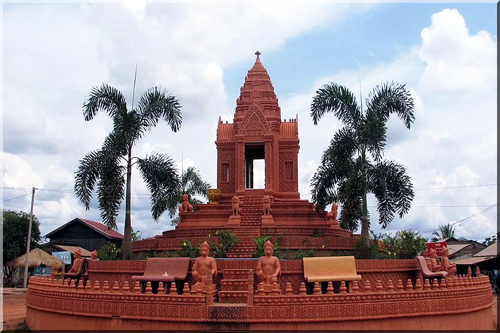

អំពីខេត្តឧត្តរមានជ័យ
ខេត្តឧត្តរមានជ័យ ស្ថិតនៅភាគពាយ័ព្យនៃព្រះរាជាណាចក្រកម្ពុជា និងមានព្រំប្រទល់ជាប់ប្រទេសថៃ។ ខេត្តនេះមានធនធានធម្មជាតិ ព្រៃឈើ និងជួរភ្នំដងរែកដ៏ស្រស់ស្អាត។ ក្រៅពីវិស័យកសិកម្ម ខេត្តឧត្តរមានជ័យក៏មានសក្ដានុពលលើវិស័យទេសចរណ៍ធម្មជាតិ និងប្រវត្តិសាស្ត្រផងដែរ។
ប្រវត្តិសង្ខេប
ខេត្តឧត្តរមានជ័យត្រូវបានបង្កើតឡើងជាផ្លូវការនៅឆ្នាំ១៩៩៩ ដោយបំបែកចេញពីខេត្តសៀមរាប និងខេត្តបន្ទាយមានជ័យ។ តំបន់នេះធ្លាប់ជាតំបន់មានសារៈសំខាន់ក្នុងប្រវត្តិសាស្ត្រកម្ពុជា និងមានប្រាសាទបុរាណជាច្រើនដែលសាងសង់ក្នុងសម័យអង្គរ។ បច្ចុប្បន្ន ខេត្តនេះកំពុងអភិវឌ្ឍលើវិស័យកសិកម្ម ពាណិជ្ជកម្ម និងទេសចរណ៍។
កន្លែងទេសចរណ៍សំខាន់ៗ
- ប្រាសាទតាមាន់ធំ
- ប្រាសាទតាក្របី
- ជួរភ្នំដងរែក
- ច្រកទ្វារព្រំដែនអន្តរជាតិអូរស្មាច់
- រមណីយដ្ឋានអូរស្មាច់
- ផ្សារអូរស្មាច់
ទីតាំងភូមិសាស្ត្រ
ខេត្តឧត្តរមានជ័យ ស្ថិតនៅភាគពាយ័ព្យនៃប្រទេសកម្ពុជា មានព្រំប្រទល់ជាប់ខេត្តបន្ទាយមានជ័យ ខេត្តសៀមរាប ខេត្តព្រះវិហារ និងប្រទេសថៃ។ ខេត្តនេះមានជួរភ្នំដងរែកលាតសន្ធឹងតាមព្រំដែន ដែលជាតំបន់សម្បូរទៅដោយធនធានធម្មជាតិ និងទេសភាពដ៏ស្រស់ស្អាត។